🪄 Herramientas que uso
 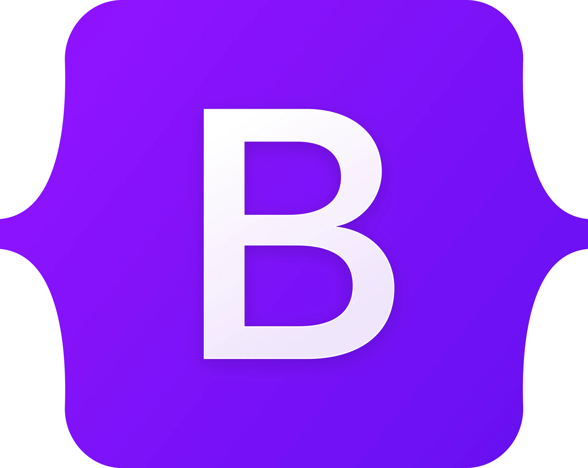
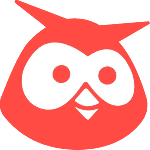
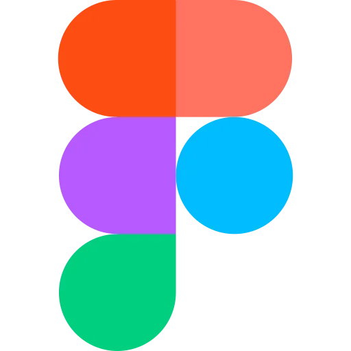
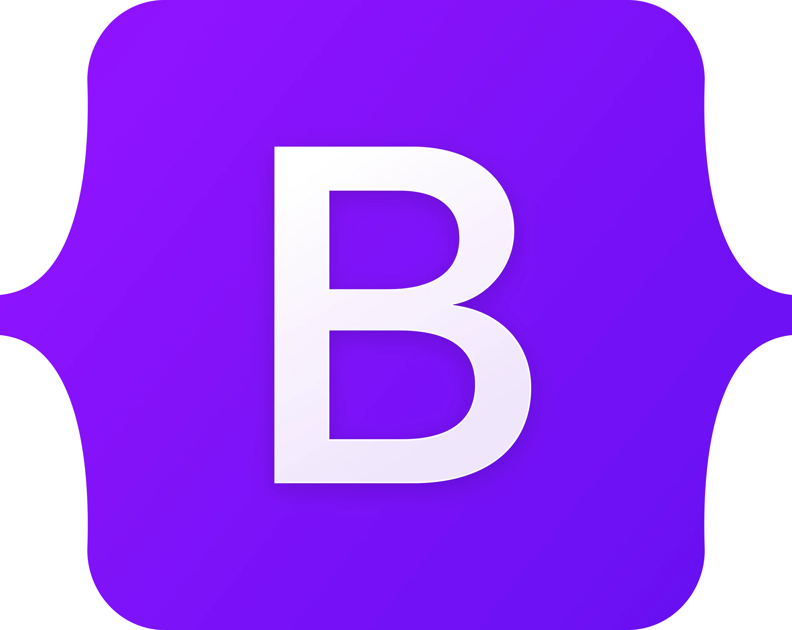
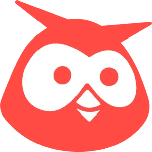
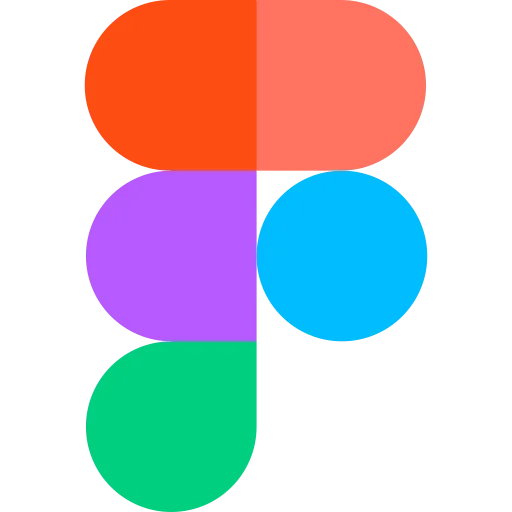
Apasionada del marketing y las creaciones
digitales. 🪄💻
Mi enfoque se centra en la innovación y el aprendizaje continuo, lo que me permite adaptarme a los
constantes cambios tecnológicos del sector y ofrecer experiencias digitales creativas y efectivas.
🧿 Mi mantra es:
"Camina siempre por la vida como si tuvieses algo nuevo que aprender y lo harás".
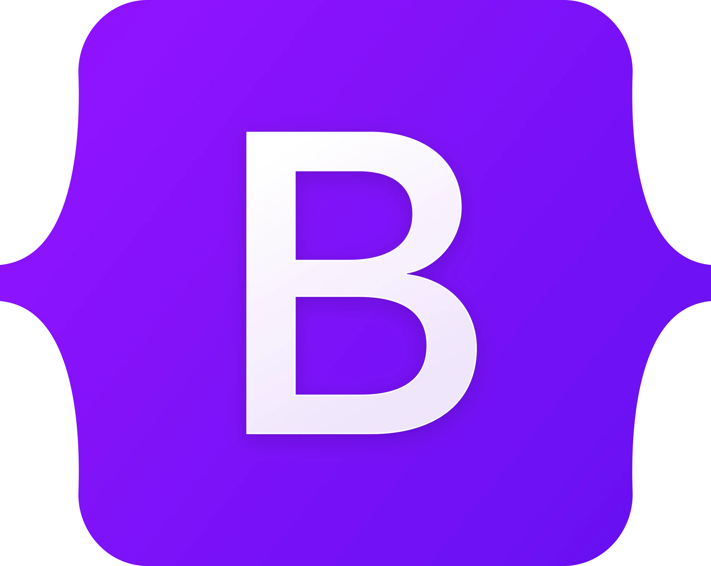
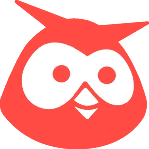
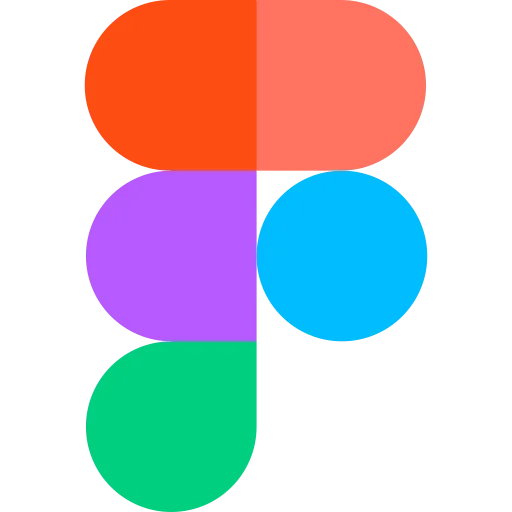
Desarrollo estrategias que conectan marcas con su audiencia de manera auténtica.
Optimizo la presencia en línea para mejorar la visibilidad y el rendimiento en buscadores y redes sociales.
Creo mensajes que resuenan, fortaleciendo la identidad y el mensaje de la marca.
Diseño visuales atractivos que comunican y captan la atención del público objetivo.
Me aseguro de que cada interacción de las plataformas sea intuitiva y satisfactoria para el usuario.
Transformo diseños en experiencias web funcionales y atractivas usando HTML, CSS y JavaScript.
Actualmente, estoy en la búsqueda de proyectos
que desafíen mis capacidades y me permitan
colaborar con mentes innovadoras.
Si tienes una idea emocionante o un reto que conquistar, ¡hablemos y
hagámoslo realidad! 😉💫